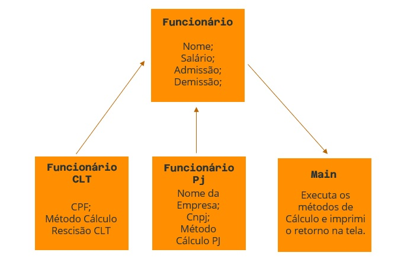

Desenvolvedores
{Adriana}
Olá! Sou Adriana Gutierrez, mas pode me chamar de Drika. Tenho formação em RH, em Secretariado e uma pós-graduação em Tradução Português/Inglês. Estou em transição de carreira desde Janeiro/2022 quando iniciei meus estudos com Front-end. Me identifico muito com esta área pois sou uma pessoa muito criativa, atenta aos detalhes, e meu sonho é fazer a diferença! E iniciei este ano uma graduação em Análise e Desenvolvimento de Sistemas para poder solidificar os meus conhecimentos, e assim conseguir uma oportunidade de trabalho neste ano de 2023.
{Alessandra}
Eu sou a Alessandra Mariana, mas me chamam de Alê, e tenho 28 anos. Sou licenciada em Ciências Biológicas (UFRPE) onde realizei estudos em entomologia forense, Tic's na educação e PBL em Rede. Sou um pessoa de alma empreendedora, onde revendi artigos de mídia onde atuei por 03 anos na área comercial com produtos farmacêuticos, e desenvolvi a minha orientação ao detalhe e habilidades de negociação. Atualmente sou graduanda em Sistemas de Informação (XPE) e tenho focado na área de Desenvolvimento Web.
{Charles}
Hey, meu nome é Charles Luchiari! Tenho 25 anos, sou formado em Fisioterapia e estou em transição de carreira desde o começo de 2022. Meu objetivo é me tornar um grande Desenvolvedor, e estou me aperfeiçoando e lapidando meus conhecimentos na área da tecnologia. E estou muito ansioso para colocar meus conhecimentos em prática!
{Lucas}
Hi, I'm Lucas a passionate technophile with a data-driven approach. As an autodidact, I believe in lifelong learning and stay up-to-date with the latest technologies and tools. During a bootcamp I specialize in Java, Spring, focusing in Backend development. From my bachelor degree in Business I thrive in fast-paced environments where I can innovate and create.
{Mike}
Sou Mike Marquezini, tenho 30 anos, possuo experiência na área financeira onde atuei por 8 anos, sendo mais específico em Contabilidade Empresarial. Atualmente estou em transição de carreira e meu foco é integrar a industria tecnologica com enfase em desenvolvimento.
{Samuel}
Eu sou Samuel de Souza Marques, mas pode me chamar de Samuka. Sou formado em Técnico de Fabricação Mecânica e Inspetor da Qualidade na área de peças aeronáuticas. Estou em transição de carreira para a área de TI desde 03/2022. Atualmente estou estudando Java no curso de Fullstack Jr do bootcamp da Generation, e quero continuar me desenvolvendo para me tornar um ótimo profissional para conseguir uma oportunidade na área em 2023 e assim, por em prática meus conhecimentos adquiridos.
Objetivo
Desenvolver uma calculadora de rescisão de contrato trabalhista para funcionários tanto CLT como PJ, entregando para eles o valor correto a ser recebido pela empresa.
Requisitos
Implementação de um Menu no qual o usuário pode:
Incluir seus dados como nome, CPF (se pessoa física), ou CNPJ (se pessoa jurídica), a data de admissão, a data de demissão, e o valor do último salário;
Visualizar o cálculo do valor da multa rescisória;
Visualizar o cálculo do valor total da rescisão;
Diagrama
Implementação
Para ver na prática nossa aplicação funcionando, você pode visualizar nosso repositório clicando aqui!